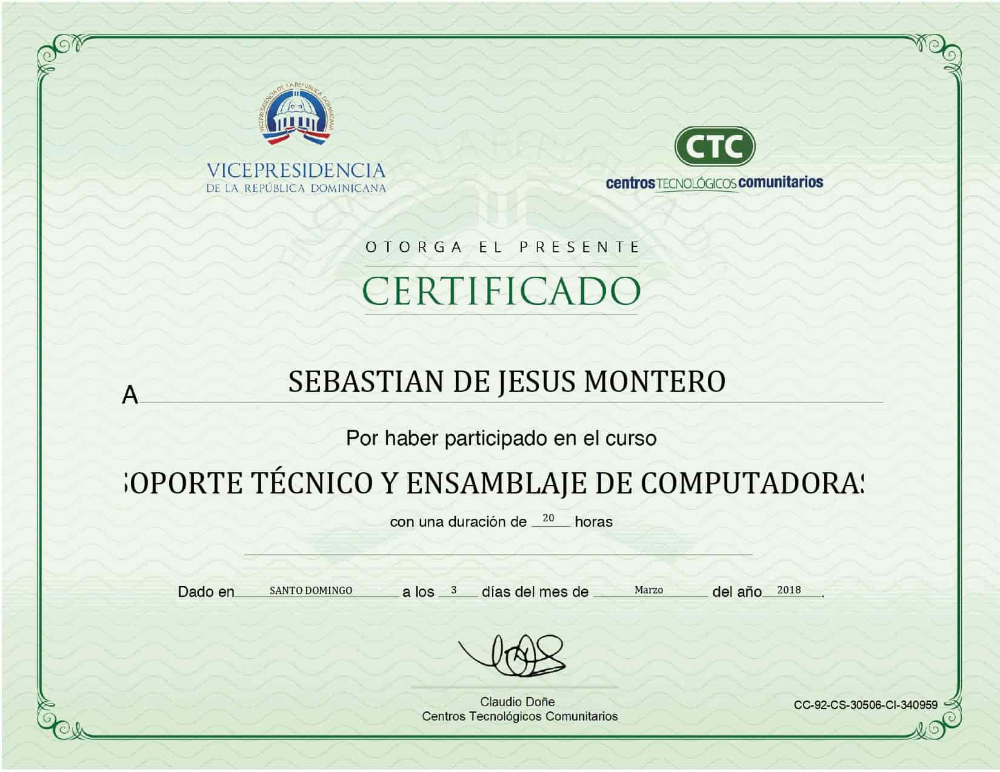
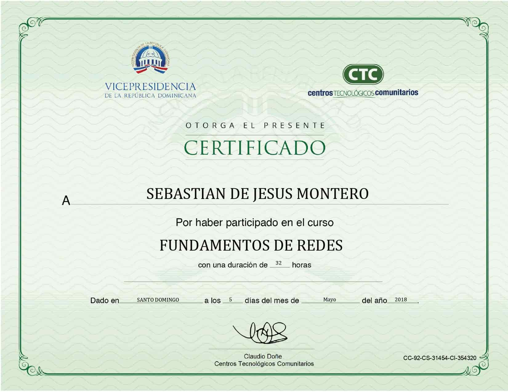
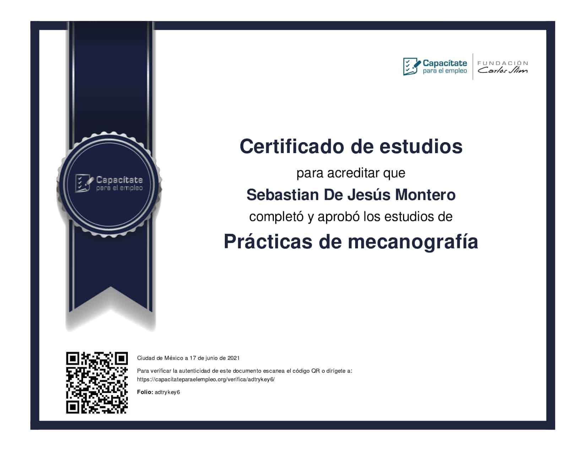
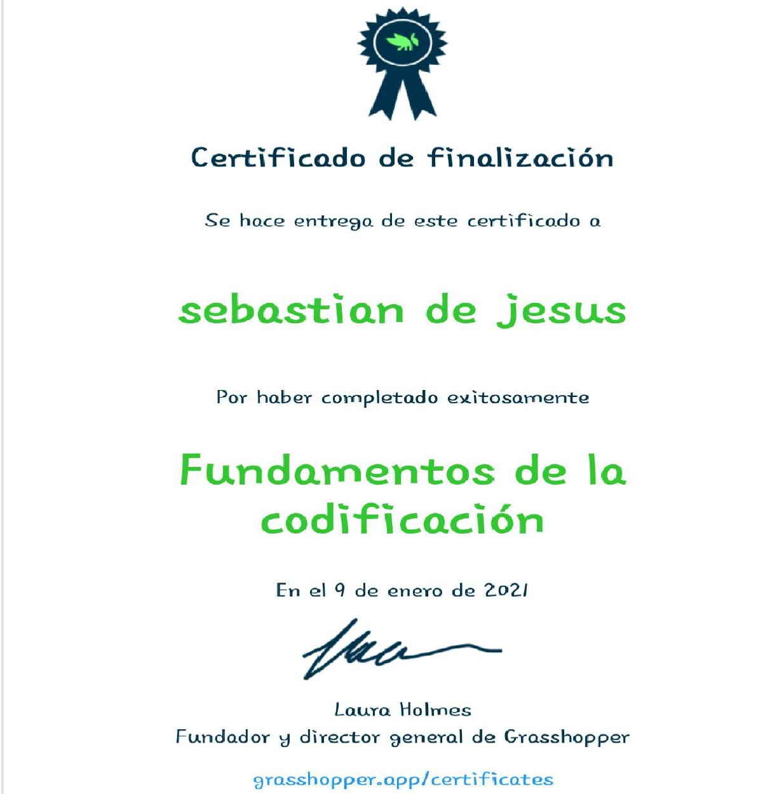

Saludos, mi nombre es Sebastian De Jesus Montero, tengo actualmente 22 años de edad, vivo en Republica Dominicana, Santo Domingo Norte, Villa Mella.
Tengo experiencia laboral en:
- Facturacion: Tengo el conocimiento base entre los tipos de comprobante fiscal que existen, B02, B01, B15, B14.
- Cobros: Manejo de caja chica.
- Entregas: Buscando y entregando el articulo requerido.
- Servicio al Cliente
- Digitacion
- Paquete de oficce: Word, Excel, PowerPoint, Outlook
- Relaciones Humanas
Tengo conocimientos en:
- HTML 5: Sigo estudiandolo.
- CSS 3: Sigo estudiandolo.
- Conocimientos basicos de Contabilidad.
- Conocimientos programas de computadoras.
Estudios:
- Ingenieria en Sistema y Computacion: Sigo estudiando (La Universidad O&M (Organización y Métodos)).
- JavaScript: Sigo estudiando. (Cursos en linea y vieo en YouTube).
- Python: Sigo estudiando. (Cursos en linea y vieo en YouTube).
Cursos:
- Soporte Técnico y Ensamblaje de Computadoras.
- Fundamentos De Redes.
- Practica de Mecanografia
- Fundamentos De La Codificación.
Certificados



